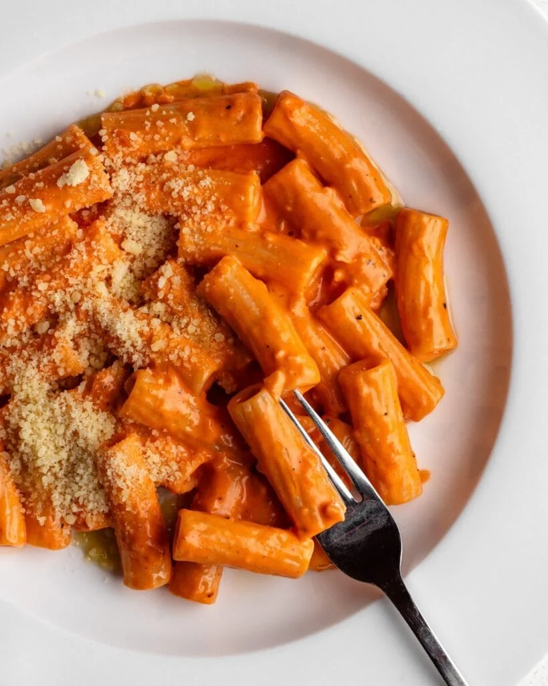

Easy Spicy Pasta

- Prep Time
- 5 minutes
- Cook Time
- 25 minutes
- Total Time
- 30 minutes
- Servings
- 4 servings
This is a delicious, creamy, and savory pasta with a bold heat that I found on Instagram. Perfect for those who love a bit of kick! My standard is that if it makes me nose run, it's a success!
Ingredients
- 16 ounces rigatoni
- ½ tablespoon olive oil
- 6-8 cloves garlic
- Enough cherry tomatoes to cover the bottom of your pan
- 6 ounces gochujang, though tomato paste works as a substitute
- 1 cup heavy cream
- 1-2 tablespoons red pepper flakes
- Salt and pepper to taste
- Parmesan to garnish
Directions
- Step 1
- Thinly slice garlic and toss in olive oil over medium heat for 1 minute. It's important to stir constantly to avoid burning garlic.
- Step 2
- Add all of the cherry tomatoes to the pan and cook them until they begin to wrinkle and soften. Continue to stir constantly. This helps to keep the garli from burning, as well as bursting the tomatoes as they begin to soften.
- Step 3
- At this point begin to bring a salted pot of water to a boil. As the tomatoes begin to wrinkle, add the gochujang/tomato paste and stir until the mixture takes on a more fluid consistency.
- Step 4
-
- Add rigatoni to boiling water until al dente.
- Pour in the heavy cream and begin to stir it in.
- Step 5
- Simmer the pasta sauce for 10 minutes. Once the pasta is done, drain into colander and reserve ½ cup of the pasta water. The starchy water will help to thicken the sauce.
- Step 6
- Add the rigatoni and pasta water to the sauce, stir, and let simmer for an additional 5 minutes.
- Step 7
- Serve into dish of your choosing, garnich with paremesan, and enjoy.